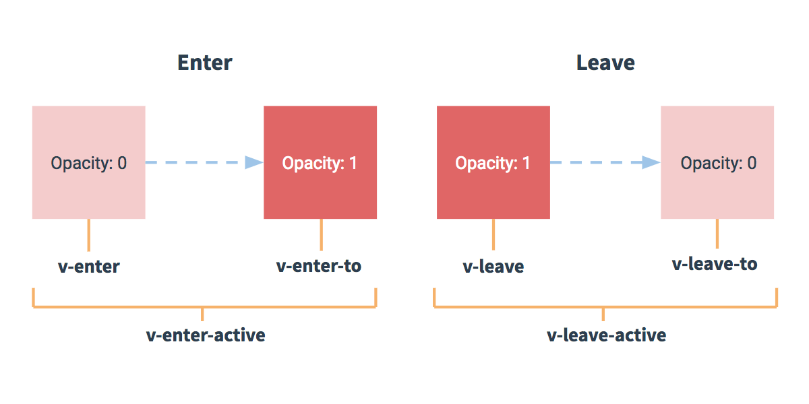

Vue.js トランジション & アニメーション
この章では、主に Vue.js のトランジション効果とアニメーション効果について説明します。
トランジション
Vue は、DOM の挿入、更新、削除時に、さまざまな方法でトランジション効果を適用できます。
Vue は組み込みのトランジションラッパーコンポーネントを提供しており、トランジション効果を実装するコンポーネントをラップするために使用します。
構文形式
<transition name = "nameoftransition"> <div></div> </transition>
次の例を通して、Vue のトランジションがどのように実装されるかを理解できます：
例
試してみる »
この例では、「クリック」ボタンをクリックすると変数 show の値が true から false に変わります。true の場合は子要素の p タグの内容が表示されます。
次のコードは、transition タグが p タグをラップしている様子を示しています：
<transition name = "fade">
<p v-show = "show" v-bind:style = "styleobj">动画实例</p>
</transition>
トランジションは実際にはフェードイン／フェードアウトの効果です。Vue は要素の表示と非表示のトランジションにおいて、切り替え用の6つのクラスを提供しています：
v-enter`v-enter`：入場トランジションの開始状態を定義します。要素が挿入される前に有効になり、要素が挿入された後の次のフレームで削除されます。v-enter-active`v-enter-active`：入場トランジション中に有効な状態を定義します。入場トランジションの全段階で適用され、要素が挿入される前に有効になり、トランジション/アニメーションが完了した後に削除されます。このクラスは、入場トランジションの所要時間、遅延、イージング関数を定義するために使用できます。v-enter-to: 2.1.8 以降入場トランジションの終了状態を定義します。要素の挿入後の次のフレームで有効になります（と同時にv-enter`v-enter` が削除されます）、トランジション/アニメーションの完了後に削除されます。v-leave`v-leave`：退場トランジションの開始状態を定義します。退場トランジションがトリガーされた時点で直ちに有効になり、次のフレームで削除されます。v-leave-active`v-leave-active`：退場トランジション中に有効な状態を定義します。退場トランジションの全段階で適用され、退場トランジションがトリガーされた時点で直ちに有効になり、トランジション/アニメーションの完了後に削除されます。このクラスは、退場トランジションの所要時間、遅延、イージング関数を定義するために使用できます。v-leave-to: 2.1.8 以降退場トランジションの終了状態を定義します。退場トランジションがトリガーされた後の次のフレームで有効になります（と同時にv-leave`v-leave` が削除されます）、トランジション/アニメーションの完了後に削除されます。

これらのトランジションで切り替わるクラス名について、名前のない `<transition>` を使用する<transition>場合、v-`v-` がこれらのクラス名のデフォルトのプレフィックスになります。`<transition name="my-transition">` を使用した<transition name="my-transition">場合、v-enter`v-` は `my-transition-` に置き換えられます。my-transition-enter。
v-enter-activeとv-leave-active`v-enter-active` と `v-leave-active` は、入場/退場トランジションのさまざまなイージングカーブを制御でき、以下の章で例を示します。
CSS トランジション
通常、CSS トランジションを使用して効果を実現します。
次の例のとおりです：
例
試してみる »
CSS アニメーション
CSS アニメーションの使用方法は CSS トランジションに似ていますが、アニメーションでは v-enter クラス名はノードが DOM に挿入された後すぐには削除されず、animationend イベントが発生したときに削除されます。
例
試してみる »
カスタムトランジションクラス名
次の属性を使用してトランジションクラス名をカスタマイズできます：
enter-classenter-active-classenter-to-class(2.1.8+)leave-classleave-active-classleave-to-class(2.1.8+)
カスタムトランジションクラス名の優先度は通常のクラス名よりも高いため、サードパーティのアニメーションライブラリ（animate.css など）と簡単に組み合わせて使用できます。
例
試してみる »
トランジションとアニメーションの同時使用
Vue はトランジションの完了を知るために、対応するイベントリスナーを設定する必要があります。それは `transitionend` または `animationend` です。transitionend 或 animationendこれは要素に適用される CSS ルールによって異なります。いずれかを使用する場合、Vue は自動的にタイプを認識してリスナーを設定します。
ただし、シナリオによっては、同じ要素に2つのトランジション効果を同時に設定する必要があります。たとえば、animation`transition` はすぐにトリガーされて完了しましたが、transition`animation` の効果はまだ終わっていません。この場合、`type` 属性typeを使用して、animation 或 transition`transition` または `animation` を設定し、Vue が監視するタイプを明示的に宣言する必要があります。
明示的なトランジション期間
多くの場合、Vue はトランジション効果の完了タイミングを自動的に判断できます。デフォルトでは、Vue はトランジション効果のルート要素の最初の `transitionend` または `animationend`transitionend 或 animationendイベントを待ちます。ただし、そうしない設定も可能です。たとえば、注意深く調整された一連のトランジション効果を持つことができ、一部のネストされた内部要素は、トランジション効果のルート要素と比較して遅延またはより長いトランジション効果を持ちます。
この場合、`<transition>`<transition>コンポーネントのduration`duration` 属性を使用して、明示的なトランジション期間（ミリ秒単位）をカスタマイズできます：
<transition :duration="1000">...</transition>
入場と退場の期間を個別にカスタマイズすることもできます：
<transition :duration="{ enter: 500, leave: 800 }">...</transition>
JavaScript フック
属性内で JavaScript フックを宣言できます：
HTML コード：
JavaScript コード：
これらのフック関数は、CSS transitions/animations と組み合わせて使用することも、単独で使用することもできます。
JavaScript トランジションのみを使用する場合、にenterとleave`enter` と `leave` 内で `done` をdoneコールバックとして使用する必要があります。そうしないと、それらは同期的に呼び出され、トランジションはすぐに完了します。
JavaScript トランジションのみを使用する要素には、`v-bind:css="false"` を追加することをお勧めしますv-bind:css="false"Vue は CSS の検出をスキップします。これにより、トランジション中の CSS の影響も回避できます。
Velocity.js を使用した簡単な例：
例
試してみる »
初期レンダリングのトランジション
`appear` 属性によってappearノードの初期レンダリング時のトランジションを設定できます。
<transition appear> <!-- ... --> </transition>
ここでは、デフォルトは入場/退場トランジションと同じで、CSS クラス名もカスタマイズできます。
<transition appear appear-class="custom-appear-class" appear-to-class="custom-appear-to-class" (2.1.8+) appear-active-class="custom-appear-active-class" > <!-- ... --> </transition>
JavaScript フックのカスタマイズ：
<transition appear v-on:before-appear="customBeforeAppearHook" v-on:appear="customAppearHook" v-on:after-appear="customAfterAppearHook" v-on:appear-cancelled="customAppearCancelledHook" > <!-- ... --> </transition>
複数要素のトランジション
複数要素のトランジションを設定できます。一般的なリストと説明：
同じタグ名の要素を切り替える場合は、`key`key属性に一意の値を設定してマークし、Vue がそれらを区別できるようにする必要があります。そうしないと、Vue は効率を優先して同じタグ内のコンテンツだけを置き換えます。
<transition>
<table v-if="items.length > 0">
<!-- ... -->
</table>
<p v-else>抱歉，没有找到您查找的内容。</p>
</transition>
次の例のとおりです：
<transition>
<button v-if="isEditing" key="save">
Save
</button>
<button v-else key="edit">
Edit
</button>
</transition>
シナリオによっては、同じ要素の `key`key属性に異なる状態を設定することで `v-if` の代わりにすることができますv-ifとv-else上記の例は次のように書き換えることができます：
<transition>
<button v-bind:key="isEditing">
{{ isEditing ? 'Save' : 'Edit' }}
</button>
</transition>
複数の `v-if` をv-if使用した複数要素のトランジションは、動的属性にバインドされた単一要素のトランジションとして書き換えることができます。例：
<transition>
<button v-if="docState === 'saved'" key="saved">
Edit
</button>
<button v-if="docState === 'edited'" key="edited">
Save
</button>
<button v-if="docState === 'editing'" key="editing">
Cancel
</button>
</transition>
次のように書き換えることができます：
<transition>
<button v-bind:key="docState">
{{ buttonMessage }}
</button>
</transition>
// ...
computed: {
buttonMessage: function () {
switch (this.docState) {
case 'saved': return 'Edit'
case 'edited': return 'Save'
case 'editing': return 'Cancel'
}
}
}
その他の拡張